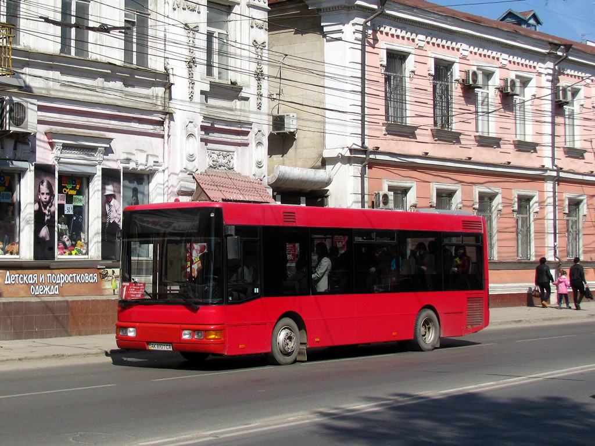

«Горавтотранс» планирует обеспечить все городские автобусы Симферополя кондукторами, а на маршрутах будут дежурить контролеры.

По инициативе городской администрации 54 из 92 муниципальных автобусов уже оборудованы валидаторами-терминалами для выдачи и проверки билетов. Работа осуществляется в тестовом режиме.
Для удобства горожан в автобусах будут работать кондукторы. В ближайшей перспективе в городском транспорте возобновят работу контролеры, которые получат право привлекать «безбилетников» к административной ответственности и снимать нарушителей с маршрута, в настоящее время решаются вопросы организационного и правового характера.